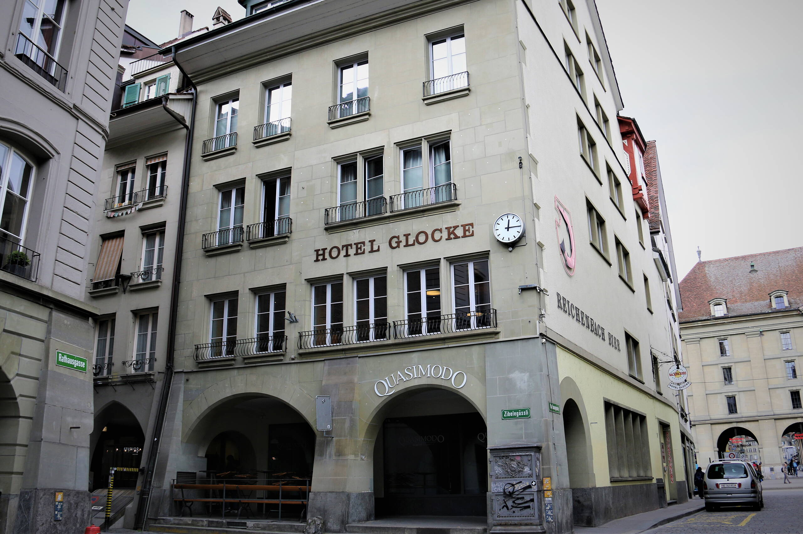
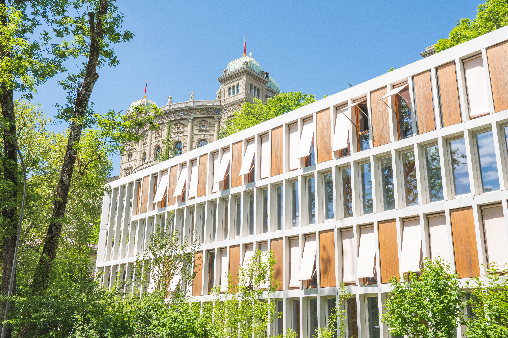
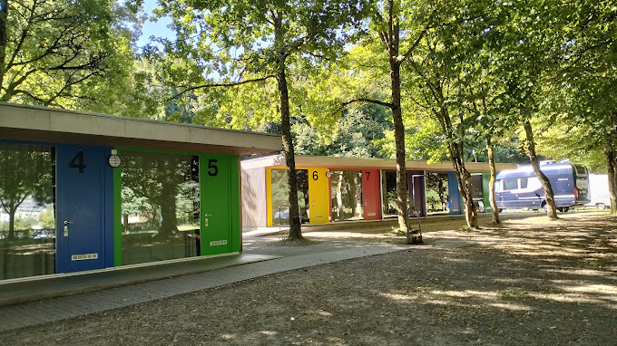
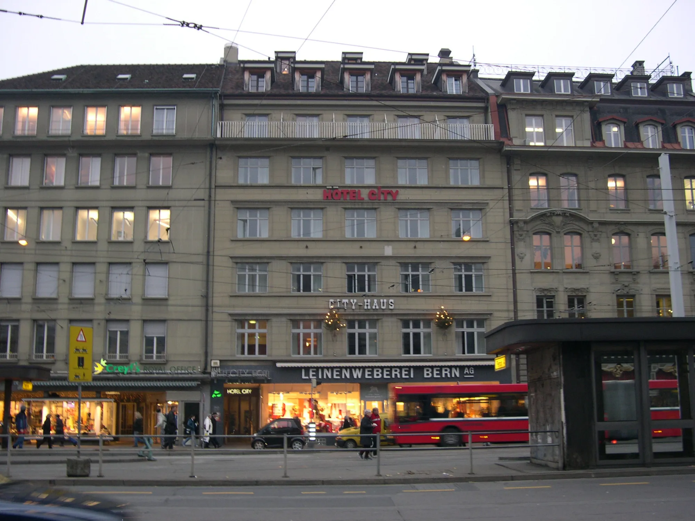

Les hébergements
Berne propose de nombreux hébergements adaptés à différents budgets et types de séjour. Les visiteurs peuvent choisir parmi des hôtels, des auberges de jeunesse, des chambres d’hôtes et des appartements de vacances. Certains logements se trouvent dans le centre historique, tandis que d’autres sont situés dans des quartiers plus calmes, à quelques minutes des principales attractions.
Bern Backpackers Hotel Glocke
Type : auberge de jeunesse et hôtel économique
Prix indicatif : dès 37 CHF par personne en dortoir ; chambres privées dès 76 CHF
Services : cuisine commune, Wi-Fi gratuit, salle commune et linge de lit inclus. Petit-déjeuner non compris.
Adresse : Rathausgasse 75, 3011 Berne
Lien : bernbackpackers.ch
Note/étoiles : non indiquées

Bern Youth Hostel
Type : auberge de jeunesse
Prix indicatif : chambre double dès 182 CHF la nuit
Services : Wi-Fi gratuit, terrasse, jardin, parking et espaces communs.
Adresse : Weihergasse 4, 3005 Berne
Lien : youthhostel.ch
Note/étoiles : non indiquées

Camping Eichholz
Type : camping, avec emplacements et quelques chambres
Prix indicatif : dès 14 CHF par adulte et 10 CHF pour une petite tente, par nuit
Services : cuisine commune, sanitaires, douches, branchements électriques et espaces de loisirs.
Adresse : Strandweg 45, 3084 Wabern
Lien : campingeichholz.ch
Note/étoiles : non indiquées

Hotel City am Bahnhof
Type : hôtel 3 étoiles
Prix indicatif : chambre double dès 135 CHF la nuit
Services : Wi-Fi gratuit, petit-déjeuner, réception ouverte 24 h/24 et transports publics gratuits
pour les visiteurs hébergés à Berne.
Adresse : Bubenbergplatz 7, 3011 Berne
Lien : fassbindhotels.ch
Note/étoiles : 3 étoiles
